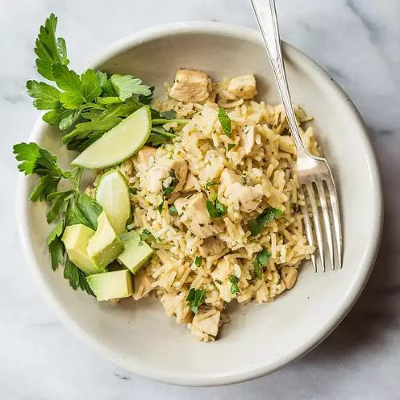

Chicken & Carbs

Description
A quick one-pot meal including chicken breast, lime zest and juice, avocado, parsley, and roasted garlic.
Ingredients
- 1 (5.5 ounce) box Knorr® Rice Sides™ - Chicken Broccoli
- 2 skinless, boneless chicken breast halves, cut into bite-size pieces
- 2 tablespoons roasted garlic
- Freshly ground black pepper to taste
- 2 limes
- 2 avocados, peeled, pitted, and sliced
- 2 tablespoons chopped fresh parsley
Directions
- Grate the zest of 2 limes; squeeze juice from 1 lime. Reserve separately.
- Combine 2 cups water, Knorr® Rice SidesTM- Chicken Broccoli Rice, diced chicken, roasted garlic, black
pepper, and lime zest in a pot. Bring to a boil over high heat; stir. Reduce heat and cover. Simmer over low
heat until most of the water has been absorbed, about 10 minutes.
- Top with avocado slices, fresh parsley, and fresh lime juice to taste.